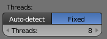

По-умолчанию Blender генерирует видео-файл из видео-секвенсора в один поток. Это происходит из-за того, что для создания видео-файла в Blender используется внешний конвертор видео ffmpeg. Казалось бы, в Blender есть настройка количества потоков:

Но она не влияет на рендеринг видео-файла. И поэтому при сохранении видео задействуется только одно ядро.
Однако есть решение. Вместо генерации одного видео-файла, можно в параллельных потоках сгенерировать несколько файлов, а потом их склеить в итоговый.
Для этого существует утилита pulverize:
https://github.com/sciactive/pulverize
Она имеет реализацию на PHP, Python и CMD.
Версия для Python используется так:
usage: pulverize.py [-h]
[-w WORKERS]
[--concat-only]
[--render-only]
[--dry-run]
blenderFile.blend